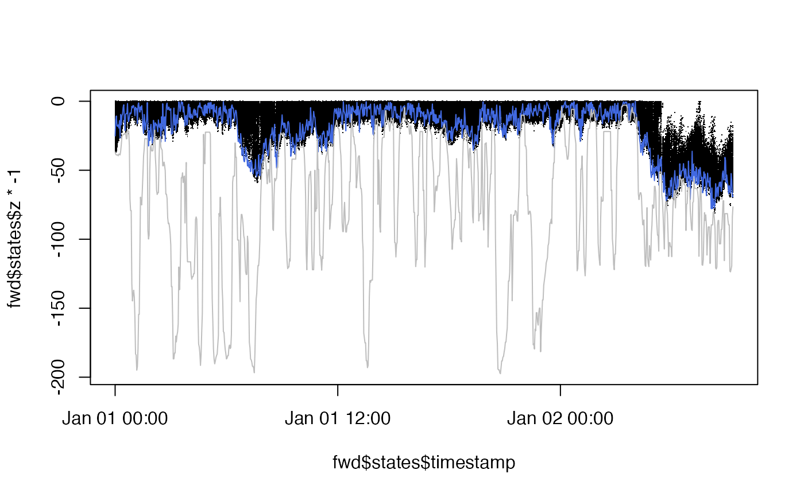
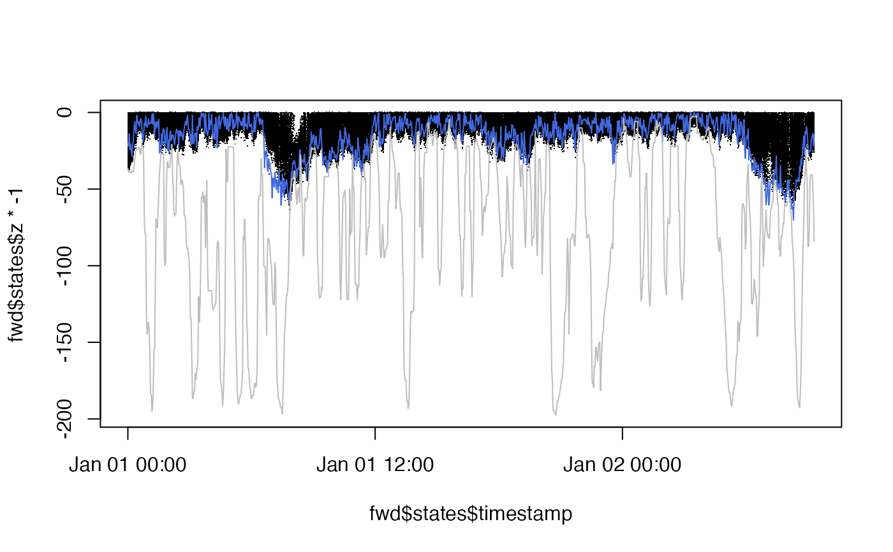
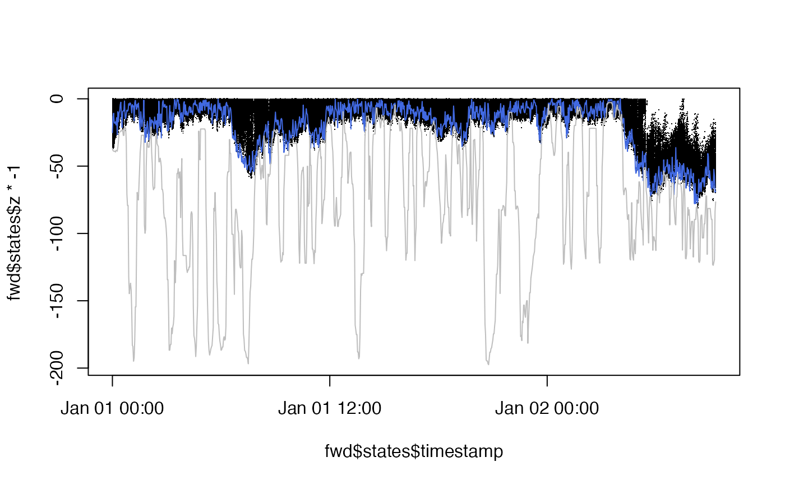
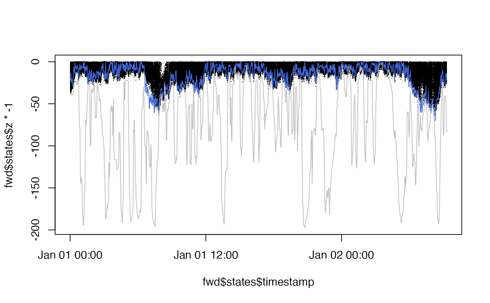

ModelObs is Abstract Type in Patter.jl that groups observation model sub-types. model_obs_*() R functions create data.tables of observation model parameters which can be visualised in R (via plot.ModelObs*() methods) and instantiated as ModelObs instances in Julia.
model_obs_acoustic_logis_trunc(.data, .strict = TRUE)
model_obs_acoustic_container(.data, .strict = TRUE)
model_obs_depth_uniform_seabed(.data, .strict = TRUE)
model_obs_depth_normal_trunc_seabed(.data, .strict = TRUE)Arguments
- .data
A
data.tablethat contains observation model parameters.For
ModelObsAcousticLogisTrunc, required columns are:sensor_idreceiver_xandreceiver_yreceiver_alpha,receiver_betaandreceiver_gamma
For
ModelObsAcousticContainer, required columns are:sensor_idreceiver_xandreceiver_yradius
For
ModelObsDepthUniformSeabed, required columns are:sensor_iddepth_shallow_epsdepth_deep_eps
For
ModelObsDepthNormalTruncSeabed, required columns are:sensor_iddepth_sigmadepth_deep_eps
See
Patter.jlorJuliaCall::julia_help("ModelObs")for details.- .strict
A
logicalvariable that defines whether or not to only retain columns in.datadefined in the correspondingModelObsstructure.Set
.strict = TRUE(default) insim_observations();Set
.strict = FALSEinpf_filter()to include time stamps and observations in thedata.table;
Value
model_obs_*() R wrapper functions return a named list, with a single element that defines the parameters of the observation models for the corresponding ModelObs structure.
Details
Observation model sub-types are Julia structures that hold the parameters of observation models. From an R-user perspective, you can think of a ModelObs sub-type as an S4-class-like object, with slots for the parameters of an observation model. With an observation model structure, we can simulate new observations and evaluate the log-probability of existing observations.
The following observation models are built in to Patter.jl:
ModelObsAcousticLogisTruncModelObsAcousticContainerModelObsDepthUniformSeabedModelObsDepthNormalTruncSeabed
In patter, observation models are required:
To simulate new observational datasets, via
sim_observations();To run the particle filter, via
pf_filter();
Observation model sub-types and parameters should be specified as a named list of data.tables. To assemble a data.table of parameters for a given ModelObs structure, see assemble functions. A named list can be created manually from individual data.tables or via model_obs_*() R functions. The R functions simply check the inputs and wrap inputted data.tables of ModelObs* parameters in a named list. A S3-ModelObs* label is added and enables supporting methods (e.g., plot.ModelObs()) to be implemented for observation models.
Internally in patter algorithms, observation model sub-types and parameters are instantiated and used to simulate observations or in the particle filter. The simulation of observations is implemented via Patter.simulate_obs(). In the particle filter, log-probabilities are evaluated by Patter.logpdf_obs(). These are generic functions. Different methods are dispatched according to the input model. For the built-in ModelObs sub-types, corresponding methods for these routines are also built-in. For custom ModelObs sub-types, the methods need to be provided.
To use custom ModelObs sub-types, see Examples.
See also
The routines in patter for the simulation of individual movements, observations and statistical modelling are built upon three Abstract Types defined in Julia:
Examples
if (patter_run(.julia = TRUE, .geospatial = TRUE)) {
library(JuliaCall)
library(data.table)
library(dtplyr)
library(dplyr, warn.conflicts = FALSE)
#### Julia set up
# Connect to Julia
julia <- julia_connect()
# Set seed
set_seed()
#### Set map in Julia
map <- dat_gebco()
set_map(map)
#### Simulate path(s)
# > We simulate a path in four dimensions (see `?StateCXYZ`)
timeline <- seq(as.POSIXct("2016-01-01 00:00:00", tz = "UTC"),
as.POSIXct("2016-01-02 09:18:00", tz = "UTC"),
by = "2 mins")
paths <- sim_path_walk(.map = map,
.timeline = timeline,
.state = "StateCXYZ",
.xinit = NULL,
.n_path = 1L,
.model_move = model_move_cxyz())
#### --------------------------------------------------
#### In-built ModelObs types
#### Example (1): ModelObsAcousticLogisTrunc
# ModelObsAcousticLogisTrunc is an in-built ModelObs structure
# This holds the parameters of a
# ... truncated logistic acoustic observation model
# To evaluate the probability of an acoustic observation,
# ... under this model, we need to know receiver positions
# ... and the coefficients in the logistic equation.
# We can then simulate observations or run the particle filter.
# Simulate an acoustic array
array <- sim_array(.map = map,
.timeline = timeline,
.n_receiver = 100L,
.arrangement = "regular",
# Define logistic equation coefficients
.receiver_alpha = 4,
.receiver_beta = -0.01,
.receiver_gamma = 750)
# This is a data.table of our acoustic observation model parameters
array
# The model_obs_*() function simply returns these in a list
# ... with a `ModelObsAcousticLogisTrunc` S3-class label
model_obs_acoustic_logis_trunc(array)
# We can plot observation model structures via corresponding `plot` methods
# See `?plot.ModelObs`
model_obs <- model_obs_acoustic_logis_trunc(array)
plot(model_obs)
# Simulate observations with a named list of observation model parameters
obs <- sim_observations(.timeline = timeline,
.model_obs = model_obs)
# In long-form, the code above can be expressed as follows
sim_observations(
.timeline = timeline,
.model_obs =
list(
ModelObsAcousticLogisTrunc =
array |>
select(sensor_id = "receiver_id",
"receiver_x", "receiver_y",
"receiver_alpha", "receiver_beta", "receiver_gamma") |>
as.data.table()))
# In real-world scenarios, we must assemble a `data.table` of acoustic observations
# (For convenience, here we simply use our simulated observations)
acc <- assemble_acoustics(
.timeline = timeline,
.detections = obs$ModelObsAcousticLogisTrunc[[1]][obs == 1L, ],
.moorings = array
)
# The particle filter expects observations & parameters to be supplied as a named list
fwd <- pf_filter(.timeline = timeline,
.state = "StateCXYZ",
.model_move = model_move_cxyz(),
.yobs = model_obs_acoustic_logis_trunc(acc, .strict = FALSE),
.n_particle = 1000L)
# This implementation is identical
fwd <- pf_filter(.timeline = timeline,
.state = "StateCXYZ",
.model_move = model_move_cxyz(),
.yobs = list(ModelObsAcousticLogisTrunc = acc),
.n_particle = 1000L)
# But with the model_obs_*() implementation we benefit from in-built `plot()` methods
plot(model_obs_acoustic_logis_trunc(acc))
# See `?ModelObs` for other in-built `ModelObs` structures
#### --------------------------------------------------
#### Custom ModelObs types
# Patter contains multiple built-in `ModelObs` sub-types that you can use
# ... (with custom parameters) simulate observations and for particle filtering.
# To use a new sub-type, follow the workflow below. Some extra work is required
# ... because we have to register the sub-type in `Julia` and write the
# ... required methods to simulate observations and/or calculate log probabilities.
#### Simulate observations arising from the simulated path
# Register a custom `ModelObs` sub-type in Julia
# * We imagine a pelagic animal in which the depth at each time step
# * ... is normally distributed around the previous depth.
# * We write a `ModelObs` sub-type in `Julia` that contains the parameters
# * ... for this model (i.e., the sigma parameter of the normal distribution).
julia_command(
'
struct ModelObsDepthNormal <: Patter.ModelObs
sensor_id::Int64
depth_sigma::Float64
end
'
)
# Define a `Patter.simulate_obs()` method
# * We need to specify a function that simulates depths for `ModelObsDepthNormal`
# * We simulate depths around the previous depth (`state.z`), truncated between
# * ... the depth of the seabed (`state.map_value`) and the surface.
julia_command(
'
function Patter.simulate_obs(state::StateCXYZ, model::ModelObsDepthNormal, t::Int64)
dbn = truncated(Normal(state.z, model.depth_sigma), 0, state.map_value)
rand(dbn)
end
'
)
# Simulate observations
model_obs <-
list("ModelObsDepthNormal" = data.table(sensor_id = 1L, depth_sigma = 5))
obs <- sim_observations(.timeline = timeline, .model_obs = model_obs)
obs <- obs$ModelObsDepthNormal[[1]]
yobs <- list(ModelObsDepthNormal = obs)
# Plot simulated depth trajectory
# * Blue: simulated time series
# * Grey: seabed depth for simulated time series
ylim <- range(c(obs$obs, paths$map_value) * -1)
plot(obs$timestamp, obs$obs * -1, ylim = ylim, col = "royalblue", type = "l")
lines(paths$timestamp, paths$map_value * -1, col = "grey")
#### Run the forward filter
# (optional) Define initial states, by:
# A) Starting the filter in the correct location by masking `.map`
# B) Specifying a `map_init()` method based on the observation model
# C) Specifying a complete data.table of initial state(s)
origin <- terra::setValues(map, NA)
cell <- terra::cellFromXY(map, cbind(paths$x[1], paths$y[1]))
origin[cell] <- paths$map_value[1]
set_map(origin, .as_Raster = TRUE, .as_GeoArray = FALSE)
# Define a `Patter.logpdf_obs()` method
# * This is used to evaluate the log probability of a depth observation
julia_command(
'
function Patter.logpdf_obs(state::State, model::ModelObsDepthNormal, t::Int64, obs::Float64)
dbn = truncated(Normal(state.map_value, model.depth_sigma),
0.0, state.map_value)
logpdf(dbn, obs)
end
'
)
# Run the filter
fwd <- pf_filter(.timeline = timeline,
.state = "StateCXYZ",
.yobs = yobs,
.model_move = model_move_cxyz(),
.n_particle = 1000L)
# Visualise reconstructed time series
# * Black: particle depths
# * Blue: simulated time series
# * Grey: seabed depth for simulated time series
ylim <- range(c(fwd$states$z, obs$obs, paths$map_value) * -1)
plot(fwd$states$timestamp, fwd$states$z * -1, ylim = ylim, pch = ".")
lines(obs$timestamp, obs$obs * -1 , col = "royalblue")
lines(paths$timestamp, paths$map_value * -1, col = "grey")
}
#> `Julia` already connected. Set `.socket = TRUE` to reconnect.


 #> `patter::pf_filter()` called @ 2024-12-30 11:10:30...
#> `patter::pf_filter_init()` called @ 2024-12-30 11:10:30...
#> ... 11:10:30: Simulating initial states...
#> ... 11:10:33: Setting observations...
#> `patter::pf_filter_init()` call ended @ 2024-12-30 11:10:33 (duration: ~3 sec(s)).
#> ... 11:10:33: Running filter...
#> ... 11:10:35: Collating outputs...
#> `patter::pf_filter()` call ended @ 2024-12-30 11:10:35 (duration: ~5 sec(s)).
#> `patter::pf_filter()` called @ 2024-12-30 11:10:35...
#> `patter::pf_filter_init()` called @ 2024-12-30 11:10:35...
#> ... 11:10:35: Simulating initial states...
#> ... 11:10:35: Setting observations...
#> `patter::pf_filter_init()` call ended @ 2024-12-30 11:10:35 (duration: ~0 sec(s)).
#> ... 11:10:35: Running filter...
#> ... 11:10:36: Collating outputs...
#> `patter::pf_filter()` call ended @ 2024-12-30 11:10:36 (duration: ~1 sec(s)).
#> `patter::pf_filter()` called @ 2024-12-30 11:10:30...
#> `patter::pf_filter_init()` called @ 2024-12-30 11:10:30...
#> ... 11:10:30: Simulating initial states...
#> ... 11:10:33: Setting observations...
#> `patter::pf_filter_init()` call ended @ 2024-12-30 11:10:33 (duration: ~3 sec(s)).
#> ... 11:10:33: Running filter...
#> ... 11:10:35: Collating outputs...
#> `patter::pf_filter()` call ended @ 2024-12-30 11:10:35 (duration: ~5 sec(s)).
#> `patter::pf_filter()` called @ 2024-12-30 11:10:35...
#> `patter::pf_filter_init()` called @ 2024-12-30 11:10:35...
#> ... 11:10:35: Simulating initial states...
#> ... 11:10:35: Setting observations...
#> `patter::pf_filter_init()` call ended @ 2024-12-30 11:10:35 (duration: ~0 sec(s)).
#> ... 11:10:35: Running filter...
#> ... 11:10:36: Collating outputs...
#> `patter::pf_filter()` call ended @ 2024-12-30 11:10:36 (duration: ~1 sec(s)).
 
#> `patter::pf_filter()` called @ 2024-12-30 11:10:36...
#> `patter::pf_filter_init()` called @ 2024-12-30 11:10:36...
#> ... 11:10:36: Simulating initial states...
#> ... 11:10:36: Setting observations...
#> `patter::pf_filter_init()` call ended @ 2024-12-30 11:10:36 (duration: ~0 sec(s)).
#> ... 11:10:36: Running filter...
#> ... 11:10:37: Collating outputs...
#> `patter::pf_filter()` call ended @ 2024-12-30 11:10:37 (duration: ~1 sec(s)).


#> `patter::pf_filter()` called @ 2024-12-30 11:10:36...
#> `patter::pf_filter_init()` called @ 2024-12-30 11:10:36...
#> ... 11:10:36: Simulating initial states...
#> ... 11:10:36: Setting observations...
#> `patter::pf_filter_init()` call ended @ 2024-12-30 11:10:36 (duration: ~0 sec(s)).
#> ... 11:10:36: Running filter...
#> ... 11:10:37: Collating outputs...
#> `patter::pf_filter()` call ended @ 2024-12-30 11:10:37 (duration: ~1 sec(s)).
